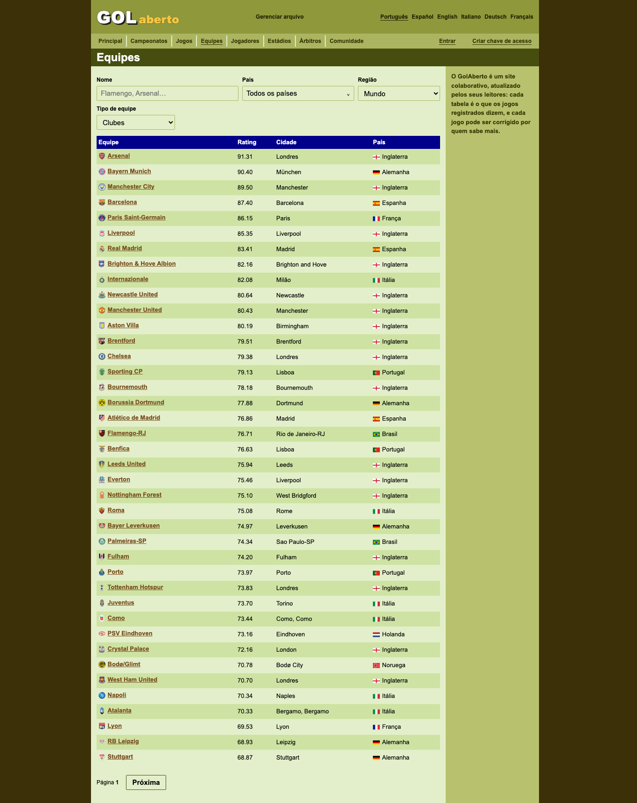

2026-11-10 — Archive verification catches transfer and memory limits
The native runtime now sorts outputs once and publishes by ordinal ranges. Ratings and odds read pages bounded by both rows and bytes, retaining the existing numerical input limit. DuckDB uses one execution thread under its 512 MiB engine budget. These changes address full-archive failures without changing the calculation window or WASM algorithm.
Player-statistics publication checked 302,234 rows, updated 357 and deleted none; standings also published. Fifteen native runtime tests, eleven focused numerical tests, the app build/test and forty browser-verifier tests passed. A synthetic one-million-row publication materialization completed under the engine budget; it does not prove full-archive publication.
Private VM image sha256:6e7bf34327b5305aa49a74e2a3e8b797ce206f4985716d2d80720f63729985aa passed HTTP verification: 298 assets, six catalogues, seventeen routes and the negative cache probe. Its container remains capped at 3 GiB. Retained inputs survived replacement; the version guard refused an intermediate image whose active bundles had not been updated.

Game-card replay and atomic publication completed in 992 seconds, checking 318,970 game cards and 637,940 team-game rows with no changes to existing rows. Ratings and odds publication remain under verification. The live statistics test timed out waiting for its baseline behind archive computation; its fixtures were removed, and the run verified 41 screens. This is not mutation/rollback proof. A subsequent numerical paging change uses up to 4,096 candidate rows under the same 1 MiB limit; a 40,000-row read fell from 314 queries/about 550 ms to 11 queries/about 55 ms. All eleven focused tests and the app build/test passed. Image sha256:885030adf6ec40fd2b9fd1ca615d6c0953034b02719f5f36212297421d0f7f51 is deployed with the retained ratings capture and numerical cache. The public hostname still serves Cloudflare. Main was merged cleanly into the PR; checks run again on new commits.